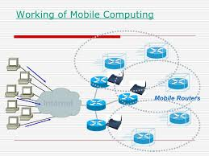

Mobile Computing
links
Mobile computing has changed the complete landscape of our day-to-day life. Following are the major advantages of Mobile Computing:-
1.Location Flexibility
2.Saves Time
3.Enhanced Productivity
4.Ease of Research
5.Entertainment
6.Streamlining of Business Processes
